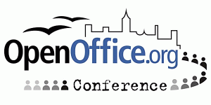

Konferenca OpenOffice.org (OOoCon 2005)
28. - 30. septembra 2005
Koper, Slovenija
Letos je bila organizacija konference OpenOffice.org zaupana slovenski in italijanski skupini OpenOffice.org,
ki sta nastopili s skupnim predlogom. Ve¿ informacij o konferenci najdete na spletni strani
OOoCon 2005.